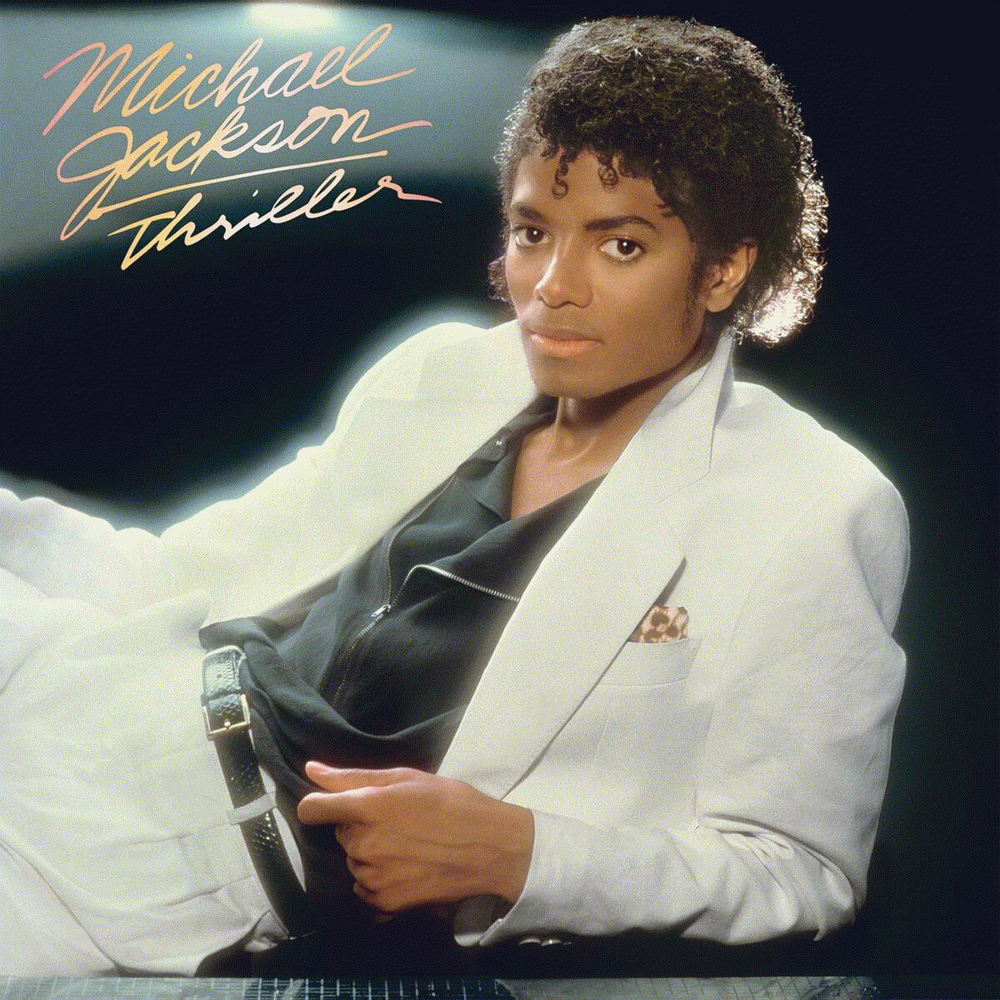

Em terceiro lugar Thriller, o sexto álbum de estúdio em carreira solo do artista estadunidense Michael Jackson, lançado em 30 de novembro de 1982, através da Epic Records. Assim como o álbum anterior do cantor, Off the Wall (1979), que foi aclamado e bem-sucedido comercialmente, Thriller foi inteiramente produzido por Quincy Jones e coproduzido por Jackson. Musicalmente, Thriller explora gêneros semelhantes aos usados em Off the Wall, incluindo o pop, o rock, o pós-disco e o funk, além de estilos suaves, como a música contemporânea e o R&B.
O álbum foi aclamado por fãs e pela mídia especializada, e é considerado por muitos "o maior e melhor álbum da história". Consequentemente, venceu um recorde de oito Grammy Awards em 1984, incluindo o de Album of the Year. Thriller foi bem sucedido comercialmente, liderando as tabelas do Canadá, dos Estados Unidos, do Reino Unido e de outras sete nações, enquanto listou-se entre as dez melhores posições em todas as tabelas em que entrou. Em um ano, tornou-se — e continua sendo — o álbum mais vendido de todos os tempos, com vendas em mais de 66 milhões de cópias ao redor do mundo. Adicionalmente, converteu-se no álbum mais vendido de todos os tempos nos Estados Unidos, vendendo mais de 33 milhões de cópias no país, até ser passado pelo álbum Greastest Hits 1971-1975 dos Eagles. Todos os sete singles do disco classificaram-se entre as dez melhores posições nos Estados Unidos, dos quais "Billie Jean" e "Beat It" lideraram a tabela musical Billboard Hot 100.
Com Thriller, o cantor quebrou preconceitos e barreiras raciais na música pop com suas apresentações na MTV, além de seu encontro na Casa Branca com Ronald Reagan, então presidente dos Estados Unidos. O disco foi o primeiro a ter vídeos musicais como materiais de divulgação bem sucedidos; os vídeos correspondentes de "Billie Jean", "Beat It" e "Thriller" eram constantemente transmitidos na MTV, sendo que o vídeo musical da última citada tem sido frequentemente citado como o "melhor vídeo musical de todos os tempos".
O álbum foi classificado na 20.ª posição entre os 500 melhores álbuns de todos os tempos, publicado em 2003 pela revista Rolling Stone;a National Association of Recording Merchandisers listou Thriller na terceira colocação entre os 200 álbuns definitivos no Rock and Roll Hall of Fame. O disco foi incluído no National Recording Registry da Biblioteca do Congresso dos Estados Unidos, que lista gravações significativas, e o vídeo musical da faixa homônima compõe o National Film Registry da Preservation Board, que compila os "filmes historicamente, culturalmente ou esteticamente significativos". Em 2012, a revista Slant Magazine qualificou Thriller na primeira posição entre os "melhores álbuns dos anos 1980".